Preserving Tunisia’s endangered heritage. Climate change, erosion, and neglect threaten our ruins. We capture them in 3D and bring them to life in AR and VR so they are never forgotten.
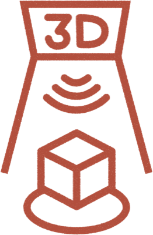
Recording mosaics, statues, and ruins at risk before time, weather, and climate erase them.
See how we scan →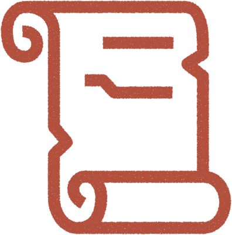
A free, growing online library where anyone can explore Tunisia’s heritage. Perfect for teachers, students, and the public.
Explore the Archive →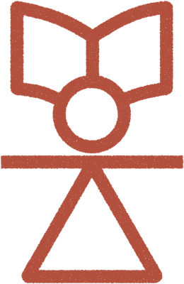
Hands-on training for students and volunteers in scanning, model cleanup, and storytelling. Programs in Tunisia and online.
Attend a workshop →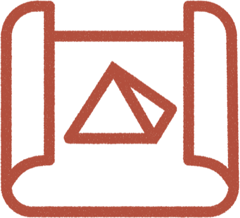
Immersive learning: place mosaics in your space with AR or walk inside a Roman villa in VR. Designed for schools and museums.
Try a demo →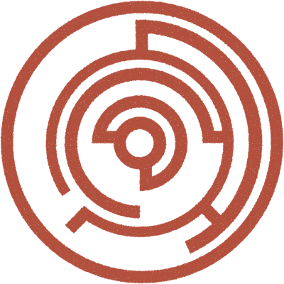
Working with institutions and experts to document sites, enhance accuracy, and share context so history is preserved and understood.
Learn & participate →Join from Tunisia or abroad. Scan on site, help classify models, write context, or build apps that bring heritage to life.
Volunteer with us →Tunisia’s ruins are vanishing faster than they can be protected. Climate change brings floods, storms, and heat that accelerate erosion. Without urgent action, pieces of world history could disappear.
With every scan, Tanit XR creates a permanent archive. Even if the physical site is lost, the digital memory survives – for schools, museums, and future generations.
Tanit XR is led by a dedicated core team and powered by a growing network of volunteers across Tunisia and the world.
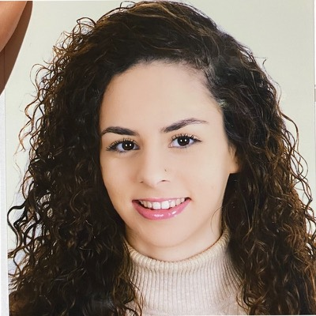
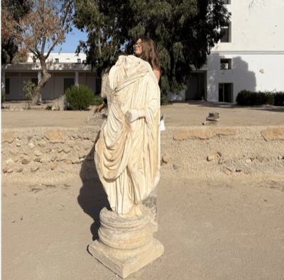
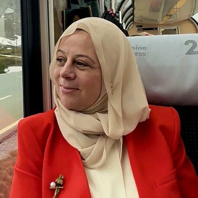
“I joined Tanit XR because I didn’t want to see our history disappear. When you walk through ruins in Carthage or Dougga, you can already see the erosion and damage from weather and time. Volunteering with Tanit XR gave me a way to fight back against that loss. Every scan I help with feels like I’m protecting a piece of Tunisia for future generations.”
— Melek Said“I joined Tanit XR because of the community. I love the people involved, and I am so grateful that we get to work together to celebrate our shared global, human heritage and shine a world spotlight on one of the most beautiful countries out there: Tunisia.”
— Caroline Nickerson, PhD“I started Tanit XR by simply walking around Carthage with my phone, scanning ruins because I couldn’t stand the idea of them being lost forever. Over time I realized this was bigger than me: people in Tunisia and abroad wanted to help, and it became a movement. Climate change, erosion, and neglect are real threats, but every scan is a way to push back, to make sure our heritage is preserved and celebrated.”
— Ines Said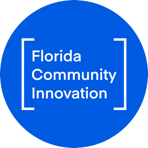
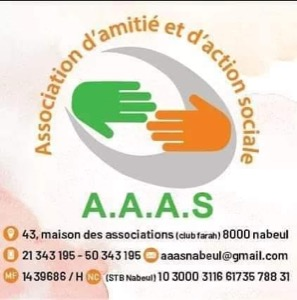
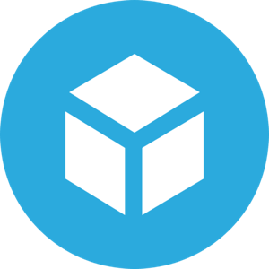
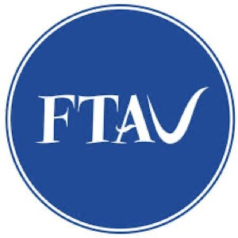